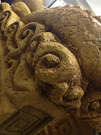
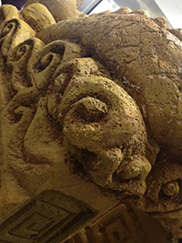

About
About me
台北北投人。追求結合自己的興趣，並可以帶給別人歡樂的工作，喜歡設計，長期以來一直以做出自己的東西為目標而努力。
沒有音樂很難工作，假日去海邊或是親近大自然，看電影，什麼都看
一年前發現網路世界起了大變化，想要自己的作品可以感染更多人，或是幫助別人的作品讓全世界的人知道，這是最棒的媒介，於是一頭栽進 HTML, CSS, Javascript 的世界。
Q 1. 你平常喜歡聽什麼樣的音樂？
這問題很難阿! 沒有特別偏好哪種音樂，只是有些特別喜歡的曲子:
world's end girlfriend - Les Enfants du Paradis &
arvo pärt - Spiegel im Spiegel
World's End Girlfriend - Birthday Resistance
ASIAN KUNG-FU GENERATION - Solanin
Q 2. 最喜歡的 5 部電影？
- 1. Fight Club 鬥陣俱樂部
- 2. Blue Gate Crossing 藍色大門
- 3. The Secret Life of Walter Mitty 白日夢冒險王
- 4. Little Miss Sunshine 小太陽的願望
- 5. Le Fabuleux Destin d'Amélie Poulain 艾蜜莉的異想世界
Q 3. 日常時間都逛些什麼網站？
awwwards
codegeekz
sidebar
codepen
codrops
coolhunting
Q 4. 週末都會做什麼事呢？
去海邊衝沙 (衝沙是什麼?)
Q 5. 你覺得連勝文怎樣 (請謹慎回答 XD)？
跟林來瘋一樣體重
一直玩一直玩一直玩一直玩
Q 6. 你覺得你腦子的洞有多大？
管記憶那部分破的有太平洋那麼大
Experience
Infine art & communicate: web marketing
SOHO: Graphic Design
DB Skimboard Taiwan: Visual Designer
Deansoft: Internship as front end
Skill
Illustrator, Photoshop, UI, HTML, CSS, Bootstrap, Compass, Sass, Gulp, jQuery, Angular, Git, coffee making, skimboard
Interesting
UX, UI, motion graphic, typography, scullptor, movie, graphic, woodworking, skate, filming, snowboarding
Works


Noah's Crate
諾亞的箱子
擬真動物的展示網站，原型師的辛苦結晶。
這是我第一個完全自己刻的網站，中間因為原形師之間對於網站的想法有所變動，所以進度目前是暫停的。

Fiery Cafe
火熱咖啡
老闆用上好的機器，上好的咖啡豆，熱情的招待每一位上門的客人
老闆對自己的美感很有想法，改了網站的部分圖片，在圖上放上了大大的黑體，溝通過了，這是他的藝術。

Happy Wedding
小五與阿龍要結婚了! 網站是codrop的範例，唯獨加了前面婚戒 loading 的動畫
"這樣好棒喔，可是一下下就看不到了"
"那我不要壓縮圖片好了，這樣就讀很久"
婚紗照是一邊公路旅遊的時候我跟另一位攝影師拍的。
Change Your Size of View to see.

這是一個藉由調整視窗，可以重新排列每個小拼圖的網站
不只一種組合
其實做這個是為了測試 sass 跟 slim 變數跟迴圈

totempoles
totempole 是印地安文化的圖騰柱，原住民用這樣的柱子去表達一個故事，可能是稱頌，也可能諷刺。
青蛙代表財富跟幸運，抱著小印安人的是一個民族英雄的故事。
綠臉的高帽子的，是個騙了印地安人的吝嗇財主。
這是一個練習 susy 的網站

URL Command
這是一次黑客松的產品，與國璽，家豪在發想後，一周內完成這個有點自嗨的小東西
使用 meteor, angular 來達到 real time 的資訊呈現。
是一個可以針對 URL 來下評論的 Chrome Extension。
只要在同一網址下，就可以互相交流對當前網址的文章，產品，或是議題發表看法。


相逢．何需．相識
Treasuring this encounter even though we’re strangers
晨光的電影夢，幸運的可以參與一部分。
攝影
2013 年滑雪影展得獎作品
旅行中難忘經驗的紀錄。
攝影 / 剪輯 / 後製

 
